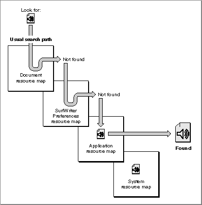

Legacy Document
Important: The information in this document is obsolete and should not be used for new development.
Important: The information in this document is obsolete and should not be used for new development.


Search Path for Resources
When your application uses a Resource Manager routine to read or perform an operation on a resource, the Resource Manager follows a defined search path to find the resource. The file whose resource fork the Resource Manager searches first is referred to as the current resource file. Whenever your application opens a resource fork of a file, that file becomes the current resource file. Thus, the current resource file usually corresponds to the file whose resource fork was opened most recently. However, your application can change the current resource file if needed by using theUseResFileprocedure.Most of the Resource Manager routines assume that the current resource file is the file on whose resource fork they should operate or, in the case of a search, the resource fork in which to begin the search. If the Resource Manager can't find the resource in the current resource file, it continues searching until it either finds the resource or has searched all files in the search path.
On startup, system software calls the
InitResourcesfunction to initialize the Resource Manager. The Resource Manager creates a special heap zone within the system heap and builds a resource map that points to ROM-resident resources. It opens the resource fork of the System file and reads its resource map into memory.When a user opens your application, system software opens your application's resource fork. When your application opens a file, your application typically opens both the file's data fork and the file's resource fork. When the Resource Manager searches for a resource, it normally looks first in the resource map in memory of the last resource fork that your application opened. So, if your application has a single file open, the
Resource Manager looks first in the resource map for that file's resource fork. If
the Resource Manager doesn't find the resource there, it continues to search the resource maps of each resource fork open to your application in reverse order of opening (that is, the most recently opened is searched first). After looking in the resource maps of the resource files your application has opened, the Resource Manager searches your application's resource map. If it doesn't find the resource there, it searches the System file's resource map.This default search order allows your application to use resources defined in the System file, to override resources defined in the System file, to share a single resource among several files by storing it in your application's resource fork, and to override application-defined resources with document-specific resources.
When the Resource Manager opens a resource fork, the File Manager assigns that resource fork a file reference number, which is a unique number identifying an access path to the resource fork. Your application needs to keep track of the file reference number of its own resource fork, so that it can refer specifically to that resource fork when necessary. Your application may also need to keep track of the file reference numbers for other resource forks that it opens.
For example, the SurfWriter application stores in its own resource fork the first few bars of Beethoven's Fifth Symphony as a resource of type
'snd '. The SurfWriter application plays this sound whenever the user writes more than one page of text per hour. The user can change this sound for all documents created by SurfWriter by using SurfWriter's Preferences command to specify or record a new sound.SurfWriter also allows the user to associate a sound with a specific document by
using SurfWriter's Set Reward Sound command to specify or record a new sound. When SurfWriter wants to play the sound, it uses the Resource Manager to read the resource of type'snd 'with the resource IDkProductiveWriter. Figure 1-4 shows the search path the Resource Manager takes to find this sound resource.Figure 1-4 A typical search order for a specific resource
 System software opens SurfWriter's resource fork when the user opens the SurfWriter application. On startup, SurfWriter opens its preferences file (SurfWriter Preferences). When the user opens a SurfWriter document, SurfWriter opens the document's data fork and resource fork. When SurfWriter attempts to read an
'snd 'resource, the Resource Manager looks first in the resource map in memory of the current resource file (in the example illustrated in Figure 1-4, the SurfWriter document) for the requested resource. If the Resource Manager doesn't find the resource, it searches the resource map of the next most recently opened file (in this example, SurfWriter Preferences). It continues searching the resource forks in memory of any resource forks open to the SurfWriter application until it either finds the resource or has searched the last resource map in its search path. Typically the last resource map searched by the Resource Manager is the resource map of the System file. This allows your application to use resources in the System file as a default.Table 1-1 summarizes the typical locations of resources used by an application.
Although you can take advantage of the Resource Manager's search order to find a particular resource, in general your application should set the current resource file to the file whose resource fork contains the desired resource before reading and writing resource data. In addition, you can restrict the Resource Manager search path by using Resource Manager routines that look only in the current resource file's resource map when searching for a specific resource.